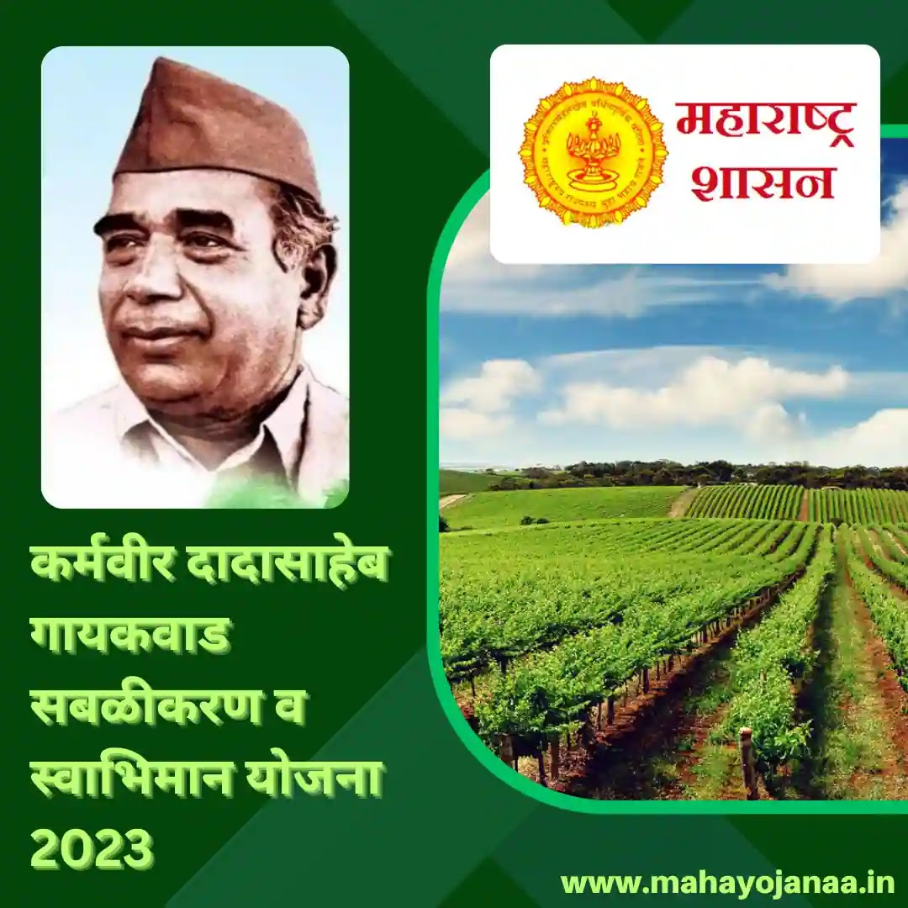

Being implemented particularly for the Scheduled Caste Communities, the "Karma Veer Dadasaheb Gaikwad Sabalikaran & Swabhiman Yojana" is a scheme by the Department of Social Justice & Special Assistance, Govt. of Maharashtra. The main objective of this scheme is to improve the financial condition of the scheduled castes and Nav-Buddhists who are landless workers and are from "Below Poverty Line".
Benefit
The beneficiary is provided with 2-acre irrigated land or 4-acre non-irrigated land on 50% of the subsidy and 50% is loan.
Eligibility
1.The applicant should be a citizen of India.
2.The applicant should be a permanent resident of Maharashtra State.
3.The applicant should be in the 18 to 60 years age group.
4.The applicant should be from Scheduled Caste or should be a Nav-Buddhists.
5.The applicant should be landless.
6.The applicant should be from the "Below Poverty Line" category.
Documents Required
1.BPL Card.
2.Aadhaar Card.
3.Proof of Age (Birth Certificate, Marksheet of Class 10th/12th, etc).
4.2-Passport Sized Photograph (Signed Across).
5.Residential Certificate / Domicile Certificate of the State of Maharashtra.
6.Caste Certificate and/or Certificate mentioning "Nau Bouddha" or "Converted Buddhist" or "Neo Buddhist" issued by the Revenue Department, Govt. of Maharashtra.
7.Details of the Bank Account.
8.Any other document required by the District Social Welfare Office.
Application Process:
Step 01: Visit the District Social Welfare Office, and request a hard copy of the format of the application form for the scheme from the concerned authority.
Step 02: In the application form, fill in all the mandatory fields, paste the passport-sized photograph (signed across), and attach all the (self-attested) mandatory documents.
Step 03: Submit the duly filled and signed application form along with the documents to the Assistant Commissioner, District Social Welfare Office.
Step 04: Acquire the receipt/acknowledgment of the successful submission of the application form from the District Social Welfare Office.